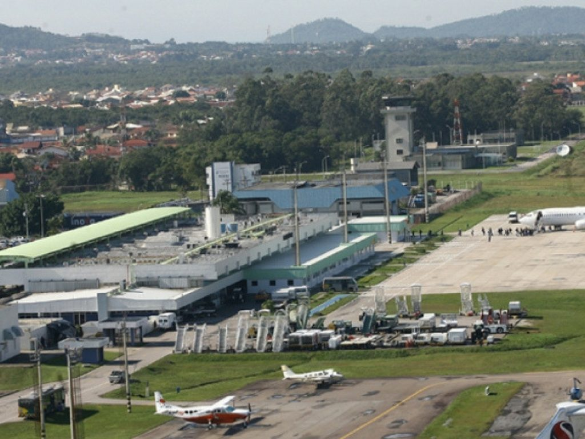

Camboriú es una enorme bahía con una vida nocturna que llama a miles de turistas al año, con clubes nocturnos, fiestas en la playa, bares, restaurantes y todo lo que una ciudad puede ofrecerte. Posee un parque El Unipraias que es el preferido de muchos.
Cómo llegar a Camboriú
En avión

No hay aeropuerto en la ciudad de Camboriú, pero hay vuelos directos desde Río de Janeiro y Sao Paulo al aeropuerto de Navegantes, ubicado a aproximadamente 20 minutos de la ciudad.
La otra opción es el aeropuerto de Florianópolis, desde donde parten vuelos regulares a varias ciudades brasileras.
Unidad de Itapemirin bus En autobús son varias las empresas de autobuses que tienen horarios diarios entre el Balneario Camboriú y otras ciudades de Brasil, como por ejemplo Pluma, Itapemirim y Catarinense. El acceso es hecho en el Km. 78 de la carretera BR-101.
Rutas a Camboriú
Rutas a Camboriú En coche.
Para llegar en coche el acceso al Balneario Camboriú se realiza por la carretera BR-101, que cruza los márgenes de la ciudad.
Actualmente y debido al mayor afluente turística, esta carretera ha sido duplicada. La cerretera es bastante segura y se encuentra en muy buenas condiciones.
Playas de Camboriú
Camboriú cuenta con más de 7 kms. de playas y al alejarse del agitado centro se pueden disfrutar de las más tranquilas villas de pescadores. La ciudad cuenta con 9 playas agrestes imperdibles, entre las cuales son las más concurridas: laranjeiras, Praia do Pino (nudista), Estaleiro, Estaleirinho, Taquaras, Taquarinhas y Mato del Camboriú.
Playas de Camboriú Praia Central
Praia Central (Camboriú)
Praia Central tiene una extensión de 5650 ts. y desde allí se puede observar la famosa Ilha das Cabras. Con aguas un poco agitadas se encuentra flanqueada por los Morros das Pedras Brancas y da Cruz, desde donde se obtienen las mejores vistas panorámicas de la ciudad. Al sur de Camboriú se encuentra el no menos conocido balneario de Itapema, con amplias playas de arenas doradas y excelente infraestructura turística.
Playas de Costa Brava
Las playas de la Costa Brava son un poco menos frecuentadas por los visitantes y son verdaderos paraísos naturales, con aguas transparentes y exuberante vegetación que contrasta con los altos edificios de la ciudad de Camboriú. La primera de sus 6 ensenadas, alberga la playa de Laranjeiras, relativamente pequeña y a la que se puede acceder por carretera, telesférico o en barco. Cuenta con excelentes restaurantes con música en vivo, además de los ya tradicionales barcinhos dispersos por la playa.
Playa de Taquarinhas
Un poco más la sur se encuentra la playa de Taquarinhas, casi inexplorada y sin edificaciones mayores que alteren la naturaleza. A su lado la playa de Taquaras, tanto o ás bonita pero en la que los turistas se encuentran un poco más cómodos ya que cuentan con casas, bares y restaurantes. La Playa do Pinho está reservada para los amantes del nudismo. La siguen las playas del Astillero y Estaleirinho, donde hay algunos restaurantes y casas de veraneo. La Playa Mato del Camboriú es ideal para quienes gusten de practicar surf.
Si bien la playa de Camboriú, con sus 7 Km. de extensión y su avenida Atlántica colmada de altos edificios, es un sitio soñado, cuando lo que se busca es tranquilidad, nada mejor que coger la carretera Interpraias y recorrer las costas.
Cristo Luz
El Cristo Luz es una de las principales atracciones de la ciudad de Camboriú, construida en 1977, erigido en la cima del Monte de la Cruz. Tiene una altura de 33 mts. y un peso de 428 toneladas, construido totalmente en hierro, acero y cemento, es obra del escultor Genésio Gomes.
Diariamente, a partir de las 20,00 hs. la enorme estatua es iluminada por cañones de luz y emite desde su mano, en la que coge un disco que representa al sol, una fuerte luz que se divisa a 15 Km. de distancia.
Desde este sitio se obtiene una excelente vista del Balneario Camboriú. Las luces permanecen encendidas durante toda la noche y se efectúan 86 combinaciones de colores, que varían de acuerdo con la estación del año. El complejo cuenta además con tiendas, bares y cafeterías.
Parque Santur
El Parque Santur es un lugar de diversión tanto para niños como para adultos. El lugar cuenta con un pequeño zoológico donde se exhibe una de las mejores colecciones de pájaros, además de otras especies de animales. También allí los niños pueden disfrutar de la vida de campo en la mini granja, donde entran en contacto con animales, pueden alimentarlos y acariciarlos. El parque implica un día de visita y es una actividad distinta.
Cuenta además con un acuario de agua salada que alberga diferentes especies de peces, desde los más comunes a los más exóticos y tortugas marinas enormes. En el terrario se pueden ver serpientes de todo tipo y arañas de las mas variadas especies. Una de las principales atracciones está dada por la ciudad de Porquinhos de la India, una ciudad en miniatura habitada por esta especie.
El Museo Arqueológico ofrece gran cantidad de piezas pertenecientes a las comunidades indígenas y se pueden ver incluso fósiles de indias embarazadas. En verano el Parque de la Santur alberga la Feria de Productos Catarinenses, donde se exponen y venden mercaderías y productos originarios de Santa Catarina. La comida nunca falta en el parque y se pueden degustar desde una buena macarronada hasta dulces artesanales y comidas típicas.
Hoteles
Mar Hotel
El Mar Hotel se encuentra en el centro de Balneário Camboriú, a 600 metros de la playa Praia Central. Ofrece piscina cubierta, bar y WiFi gratuita en todas sus instalaciones.
Todas las habitaciones del hotel disponen de aire acondicionado, TV, minibar y baño privado.
Cada mañana se sirve un desayuno con fruta fresca, zumos, panes y repostería casera. El Mar Hotel cuenta con recepción 24 horas.
El Mar Hotel está a 35 km del parque temático Beto Carrero World, a 1,4 km del monumento a Cristo Luz y a 500 metros del centro comercial Atlântico. El aeropuerto internacional Navegantes - Ministro Victor Konder, el más cercano, se halla a 30 km del hotel.
Marambaia Hotel e Convenções
El Marambaia Hotel e Convenções está ubicado en Balneário Camboriú, en el estado de Santa Catarina, a 30 pasos de la playa local y a 3 minutos a pie de la noria FG Big Wheel, y cuenta con piscina al aire libre disponible durante todo el año, piscina infantil, piscina cubierta y 3 bañeras de hidromasaje.
Las habitaciones disponen de aire acondicionado, TV por cable y baño privado con artículos de aseo gratuitos. Hay WiFi gratuita de alta velocidad en todas las zonas del Marambaia Hotel e Convenções.
Este hotel también cuenta con sala de juegos, parque infantil, zona de fitness y bar.
El Marambaia Hotel e Convenções se encuentra a 900 metros de la playa de Buraco y a 7 km del teleférico, del barco pirata, del acuario Oceanic Aquarium y del parque temático Unipraias. El aeropuerto internacional Ministro Vítor Konder de Navegantes y el parque temático Beto Carrero World están a 40 km.
Hotel Bhally
El Hotel Bhally está enfrente de la playa de Balneário Camboriú, cerca de algunos restaurantes y tiendas. La piscina está en la terraza del hotel y cuenta con vistas preciosas al océano.
Las habitaciones están equipadas con TV por cable, aire acondicionado y conexión WiFi gratuita. Algunas ofrecen vistas al mar.
El Bhally tiene un gimnasio totalmente equipado, centro de negocios de servicio completo y aparcamiento privado.
El Bhally Hotel alberga un bar restaurante. Por la mañana se sirve un desayuno buffet con fruta fresca variada, pan, embutidos y bebidas frías y calientes.
Restaurantes
Mangiare Felice
Con un servicio esmerado, este restaurante de comida italiana es un espacio acogedor donde degustar los platos tradicionales italianos. El menú incluye una gran variedad de carnes, pastas y frutos del mar, además de su carta de vinos y postres. Permanece abierto para el almuerzo y la cena, ofreciendo servicio de traslado de turistas y ejecutivos sin costo adicional.
Dirección: Av. Atlántica 570, Barra Norte.
Restaurante O Pharol
Este restaurante ofrece un ambiente descontracturado durante el día y una atmósfera romántica durante la noche. Su ubicación es privilegiada, se encuentra sobre la Barra Sur, frente al mar y ofrece una estructura diseñada para recibir amigos y clientes. Cuenta con espacios diseñados para diversas ocasiones y un sistema wireless para sus clientes. Además de las anteriores comodidades, pose un área recreativa para niños.
Dirección: Av. Atlántica 5740.
Chaplin Restaurante
Fundado en 1992, en sus comienzos ofrecía platos regionales a base de frutos del mar principalmente, en un ambiente agradable. La premisa es ofrecer la mejor atención y la calidad de sus ingredientes. El Camarón a la Chaplin es uno de los más pedidos y se sirve desde la inauguración. Abierto todos los días desde las 11:00 a.m. hasta las 01:30 a.m. El restaurante tiene capacidad para atender a 100 personas.
Direccion:Av. Atlántica 2220